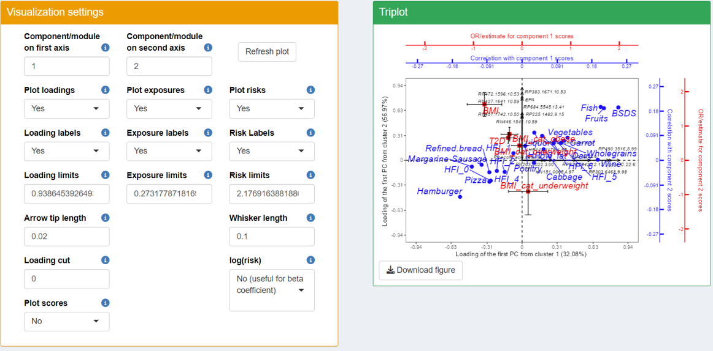
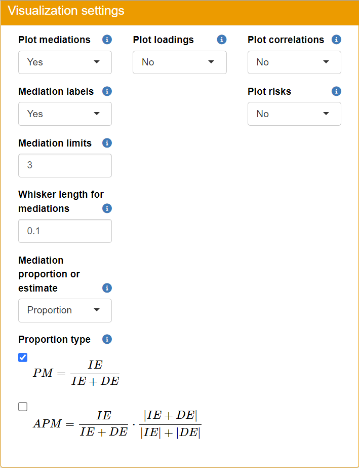
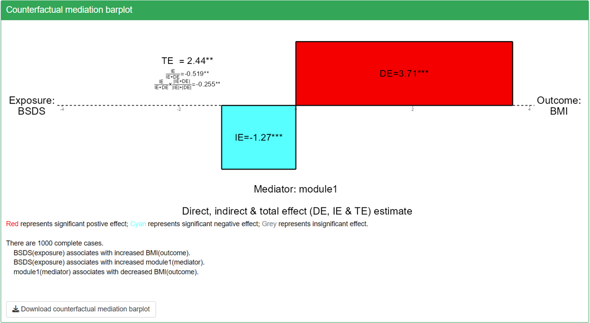
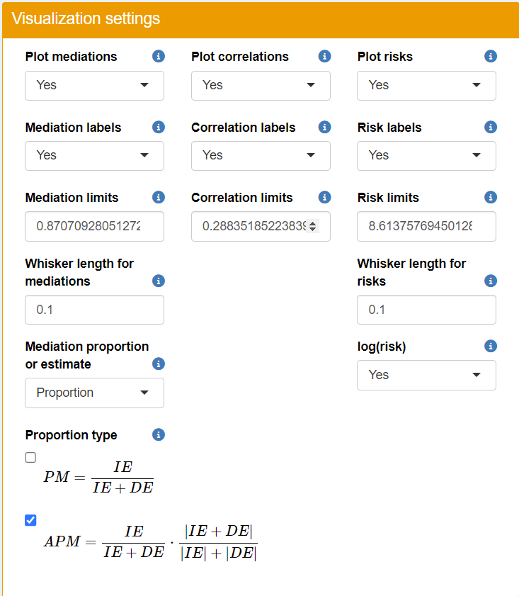

Before starting, please make sure you have installed the TriplotGUI package following Setup.
Data description
Each dataset used in this page of tutorial can be downloaded here as a dataframe in the rds files:
- Example3_exposome.rds
- Example3_selected_exposure.rds
- Example3_Omics.rds
- Example3_outcome.rds
- Example3_covariate.rds
The Data used for this example originates from ExposomeChallenge, which is modified from the data provided by the “the Exposome data Challenge Event” hosted by ISGlobal in April 2021 (Maitre et al, 2022). The data used by the event came from the HELIX (the Human Early Life Exposome) subcochort data base and were partially simulated. The HELIX study aims to measure and describe multiple exposures during early life (pregnancy and childhood) and associates these exposures with molecular omics signatures and child health outcomes, using 6 established logitudinal population based birth cohort studies (Maitre et al, 2018). We have selected our exposome, selected exposures, Omics data, outcomes and covariates data based on the ExposomeChallenge data following the code and data here. The brief description of these data is shown as below.
Example3_Omics.rds: 177 variables representing plasma metabolites. All 177 variables are continuous/numeric.
-
Example3_outcome.rds: 6 variables:
-
"asthma": Doctor diagnosed asthma (ever): A binary factor variable with 2 levels: 1 represents diagnosed and 0 represents not.
-
"zBMI_cat": Body mass index categories at 6-11 years old: A categorical factor variable with 4 levels: 1: Thinness, 2: Normal, 3:Overweight, 4: Obese. -
"zBMI": Body mass index z-score at 6-11 years old - Standardized on sex and age: A continuous/numeric variable. -
"birth_weight": Child weight at birth (g): A continuous/numeric variable. -
"IQ": Intelligence quotient at 6-11 years old - Total of correct answers at the RAVEN test: A continuous/numeric variable. -
"neurobehavior": Neuro behavior - Internalizing and externalizing problems at 6-11 years old - CBCL scale: A continuous/numeric variable.
-
Example3_exposome.rds: containing a dataframe with 222 environmental variables (outdoor exposures, indoor air, lifestyle chemicals). All the 222 variables are continuous/numeric.
Example3_selected_exposure.rds: containing a dataframe with 34 variables. These variables are selected out of the 222 environmental variables by the “MUVR2” machine learning algorithm (Yan et al, 2024) as predictive/relevant to either
"IQ"or"zBMI"(Out of the 6 outcome variables, the prediction using machine learning gives convincing prediction performance for these 2 variables, but not the other 4 variables)Example3_selected_exposure_noisy.rds: containing a dataframe with 73 variables. These variables are selected out of the 222 environmental variables by the “MUVR2” machine learning algorithm as predictive/relevant to at least one out of the 6 outcome variables. However, out of the 6 outcome variables, the prediction using machine learning did not give convincing prediction performance for
"asthma","zBMI_cat","birth_weight","neurobehavior".Example3_covariate.rds: 13 variables that can be used as potential confounders:
"cohort","sex_child","yearbir_child","BMI_maternal","weight_gain_maternal","gestational_age_maternal","age_maternal","education_maternal","native_child","parity_maternal","age_child","height_child","weight_child"
The data frames are row-wise matched by observation and consist of 1198 observations.
Reference
Yan, Y., Schillemans, T., Skantze, V., & Brunius, C. (2024). Adjusting for covariates and assessing modeling fitness in machine learning using MUVR2. Bioinformatics Advances, vbae051. doi: doi.org/10.1093/bioadv/vbae051
Maitre, L., Guimbaud, J. B., Warembourg, C., Güil-Oumrait, N., Petrone, P. M., Chadeau-Hyam, M., … & Exposome Data Challenge Participant Consortium. (2022). State-of-the-art methods for exposure-health studies: results from the exposome data challenge event. Environment international, 168, 107422. doi: 10.1016/j.envint.2022.107422
Maitre, L., de Bont, J., Casas, M., Robinson, O., Aasvang, G. M., Agier, L., … & Vrijheid, M. (2018). Human Early Life Exposome (HELIX) study: a European population-based exposome cohort. BMJ Open 8 (9), e021311. doi: 10.1136/bmjopen-2017-021311
Research question
In this use cases, we have used three group of exposures (1) exposome: 222 variables. (2)selected_exposure_noisy: 73 variables. (3)selected exposures: 34 variables. We use 2 variables,"IQ" and`“zBMI” as out outcomes and metabolomics variables as our mediator Omics data.
From the information in the data description, we know that group (3) variables are the most relevant variables to "IQ" and`“zBMI”. Group (2) variables contains all group (3) variables and also other variable that are not relevant. Group (1) variables contain even more irrelevant variable.
We want to explore if group (3) variables indeed show more relevance to the outcome variables than group (1) and (2) in TriplotGUI, and whether TriplotGUI can identify Omics patterns that may mediate the mechanism from exposures to outcomes.
The use of interface
Run TriplotGUI_shiny() to open your interface. We will show you an use case.
Step 1: Data reduction of Omics data.
First upload the Omics data in step 1. Inspect the classes of Omics variables briefly. Use the default of “Data analysis settings”. Play around in the “Visualization settings”. Since we have 177 Omics variables, click the Loading labels to No so that you have a clearer view of your loadings plot. You can observed that using PCA as data analysis method, your loadings (representing omics variables) are mostly positively associated with your component 1.
{kind=link}
Step 2: Exposures’ correlations & Outcomes’ associations
Then upload exposures and covariate data in step 2A. Briefly inspecting variable classes. You can choose which covariate variables to adjust as you wish. In our use case example, for the sake of simplicity, we will not perform any covariate adjustment (the Raw or partial correlation is specified as Raw in the “Data analysis settings”)
{kind=link}
{kind=link}
Change your “Data analysis settings” as the figure below.
- Select One-hot-encoding in Categorical variables performs one-hot-encoding to transform categorical exposures variables (i.e.
HFI) with n>2 classes to n binary variables. If Use Original is specified in Categorical variables, then theHFIvariable is forced to be a numeric variable. This is not recommended unless you are sure that the level itself reflects the numeric value. - The approaches for managing Missing values are inherited from the cor package for continuous exposures. Please check cor package for more information.
{kind=link}
You could briefly see the correlation coefficients in “Visualizations” by clicking “Refresh plot”.
{kind=link}
Then in step 2B, upload outcome and covariate data By briefly inspecting variable classes, you could notice: - In the outcome data, "BMI" is a numeric variable; "BMI_cat" and "T2D" are factor variables. - A variable called "X" exists in the covariate data. This is because the covariate data is uploaded as a csv file and the observation number may automatically be generated as a new variable when the file is read in. Remove this variable since it is not an actual covariate.
{kind=link}
{kind=link}
Change your “Data analysis settings” and “Visulization settings” as the figure below.
Some clarification for using multinomial regression and pairing variables:
- When a pairing variable is not provided:
- Not performing multinomial regression means that one-hot-encoding will be performed to transform outcome’s categorical variables with n > 2 classes to n binary variables. And logistic regression will be performed on the binary variables and linear regression will be performed on continuous variables.
- Performing multinomial regression means that multinomial regression will be performed on outcome’s categorical outcome variable with n > 2 classes, which gives n-1 estimates. And logistic regression will be performed on the binary variables and linear regression will be performed on continuous variables.
- When a pairing variable is provided:
- Not performing multinomial regression means that one-hot-encoding will be performed on outcome’s categorical variables with n > 2 classes. And then conditional logistic regression will be performed on the binary variables and linear mixed model will be performed on continuous variables, using the pairing information.
- Performing multinomial regression means that the pairing information will not be ignored and used (since the outcomes can have more than 2 classes), multinomial regression will be performed on outcome’s categorical variable, which gives n-1 estimates. And logistic regression will be performed on the binary variables and linear regression will be performed on continuous variables. THIS IS THE CASE IN OUR EXAMPLE.
{kind=link}
{kind=link}
Step 3: Visualization of Triplot
In step 3, by clicking “Refresh plot”, you can see and download the triplot that co-visualizing the three plots shown above. The left side panel gives you freedom of making adjustment to the plot. 
{kind=link}
In the triplot, blue circle points represent exposure correlations and the red square points represents outcome risk estimates with confidence interval. So what information can we get from this figure? Lets us list a few points:
- Having a brief look, the generally healthy food (e.g.
"Fruits","Vegetables") is on the first dimension of the figure and the generally unhealthy food (e.g."Hamburger","Sausage","Margarine") is on the third dimension of the figure. The numeric outcome"BMI", binary outcome"T2D", and one-hot-encoded categorical"BMI_cat"outcome is on the second and fourth dimension of the figure. - Explanation on some variables in the plot:
-
"HFI"stands for healthy food index. A higher"HFI"suggests healthier diet."HFI"ranges from 0 to 6. You can see that there are HFI_0, HFI_1…HFI_6 in the figure and that is because"HFI"is used as a factor exposure variable in step 2 and is one-hot-encoded (´allowcategorical=F´) to the same number of binary variables as its number of levels. For example, HFI_6 is a binary variable where individuals with"HFI 6"(most healthy diet people) will be labeled as 1 and the rest of individuals will be labelled as 0. HFI_0 is a binary variable where individuals with"HFI 6"(most unhealthy diet people) will be labeled as 1 and the rest of individuals will be labelled as 0. HFI_1…HFI_5 has limited use since it only separates the group of people with certain"HFI"from to the rest, which is a mixture of healthier and less healthier diet people. -
"BSDS"stands for Baltic Sea Diet Score ranging. A higher"BSDS"suggests healthier diet."BSDS"is used as a numeric variable ranging from 2 to 25 in this step. -
T2D_1 represents the odds ratio of
"T2D". Since"T2D"is a binary variable with 0(control) and 1(case) level. A logistic regression is performed on the"T2D", and 0 is used as reference. That is why it shows T2D_1 on the plot. -
BMI_cat_obese, BMI_cat_overweight,BMI_cat_underweight are the odds ratio generated from the multinomial regression. Since
"BMI_cat"is a categorical outcome and multinomial regression is performed in step 2 (multinomial=T), normal weight is uses as a reference and odds ratio of obese, overweight and underweight is produced. (Note that the first level of the factor variable is set as the default reference, in this case it is normal.
-
- Adjusting for
"Age","Gender","Smoking","Education"and"FastingGlucose", component from the first cluster (on x-axis) correlates positively with generally healthy food (e.g."fruits","vegatables") and food index (e.g."BSDS") and negatively with unhealthy food (e.g."Hamburger","pizza"). It also reversely associated with"T2D"and"BMI". From the result from"BMI_cat", this components also reversely associated with being obese. This suggests that metabolite features from the first cluster may contribute to the mechanism from food to the incidence of T2D and obese - Component from the second cluster (on y-axis) associated positively with generally healthy food (e.g.
"fruits","vegatables") and food index (e.g."BSDS") and negatively with unhealthy food (e.g."Hamburger","pizza"). However, the component correlates also positively with"T2D","BMI", obese, overweight and negatively associated with underweight. This suggests that metabolite features from the second cluster may be relevant to the mechainism of weight gain through healthy food (or a weight loss through unhealthy food)
There are many things you could explore further in the following mediation analysis. To narrow down our focus and clearly show our examples, we select "BSDS" (Baltic Sea Diet Score) and "Hamburger" as our exposures, "BMI" and "T2D" as outcome to enter our next step.
Step 4: Mediation analysis and visualization
This time, we perform the mediation analysis using the conterfactual/potential outcome method (the ´mediation´ package) on the our exposures (i.e. "BSDS", "Hamburger"), mediators (i.e. the first PC of the first 2 clusters) and outcome (i.e. "T2D", "BMI") of interest, adjusting for "Age", "Gender", "Smoking", "Education" and "FastingGlucose" for both exposure-mediator and mediator-outcome relationship.
In the counterfactual mediation analysis, you need to specify contrast values of treatment and controls for each exposure. In brief, the algorithm will compare the scenarios with these 2 exposure values/levels. For my detailed explanation please refer to this paper of the mediation R package.
If an exposure variable is continuous (numeric variable), it is recommended that the 2 exposure values is chosen between the range of the exposure variable. If an exposure variable is categorical (factor variable), the 2 exposure levels should be chosen from the levels of the exposure variable.
Use the following settings for your data analysis. Mediation analysis is then performed using the counterfactual method on the our selected exposures, mediators and our selected outcomes, adjusting for covariates for both exposure-mediator and mediator-outcome relationship.
- Note that you need to click Do mediation to start running the mediation analysis.
{kind=link}
You could then play around in the “Visualization settings” too see how you want to visualize your plot.
You could first only show the proportion mediated(PM) and adjust the limits to make the points more visible. 
{kind=link}
 In the figure, even though not significant, we could see the direction and magnitude of proportion mediated for the 2 mediators, all the exposures and outcomes.
{kind=link}
- Note that some confidence intervals are automatically removed form the figure if they are not within the limit.
- Note that for some mediations, direct effect and indirect effects are in the opposite direction, implying possibly proportion mediated>1, since total effect could smaller than indirect effect.
You then show the adjusted proportion mediated(PM) and adding the layers of correlation and risk estimates 
{kind=link}
{kind=link}
By observing this figure, we could see the direction and magnitude of adjusted proportion mediated for the 2 mediators, all the exposures and outcomes. The position of the points is similar what we have seen for proportion mediated. Note that APM for BSDS as exposure and T2D as outcome is smaller than their PM. This is because the indirect and direct effect for this mediation is of similar size but in opposite direction. This leads to a smaller total effect and in turn larger PM, but APM will not be affected by the directionality of direct and indirect effect. ::: callout-note - No confidence interval is shown for adjusted proportion mediated, as such value can not be directly calculated from the mediation analysis.
- Note that even direct effect and indirect effects are in the opposite direction, adjusted proportion mediated is always smaller than 1, since it uses the sum of the absolute value of indirect and direct effect as denominator. \[APM=\frac{IE}{|IE|+|DE|}\cdot\frac{|IE+DE|}{IE+DE}=\frac{IE}{IE+DE}\cdot\frac{|IE+DE|}{|IE|+|DE|}=\frac{IE}{IE+DE}\cdot\frac{|IE|+|DE|}{|IE+DE|}\] :::
In step 4, you can also see the barplots showed direct, indirect and total effect for each exposure-mediator-outcome combination. It is a convenient tool to check the direction and magnitude of mediation estimates.
{kind=link}
Step 5: Compare correlations, associations and mediations
Users can then check the heatmaps of correlations, risk estimations and mediation results at step 5. By removing other PCs, exposures or outcomes in the “Visualization settings”, users may only show correlation, risk estimation and mediation results of their interest.

{kind=link}
Step 6: Download data
Relevant data, intermediate results, can then be viewed and downloaded at step 6.
{kind=link}
{kind=link}